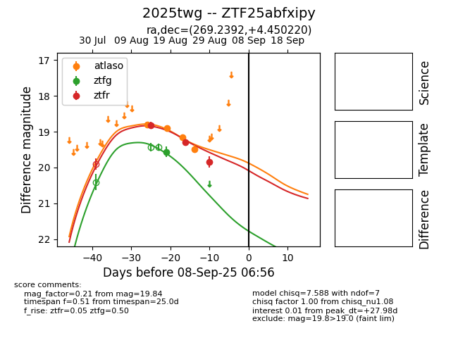

Target 2025twg at 2025-08-21 11:20, see:
FINK: fink-portal.org/ZTF25abfxipy
Lasair: lasair-ztf.lsst.ac.uk/objects/ZTF25abfxipy
ALeRCE: alerce.online/object/ZTF25abfxipy
TNS: wis-tns.org/object/2025twg
YSE: ziggy.ucolick.org/yse/transient_detail/2025twg
alt names
ZTF25abfxipy (ztf,alerce)
2025twg (tns,yse)
coordinates:
equatorial (ra, dec) = (269.2392,+4.45023)
galactic (l, b) = (30.6862,+14.14218)
photometry
last ztfg=19.56, ztfr=18.82
4 ztfg, 2 ztfr detections
